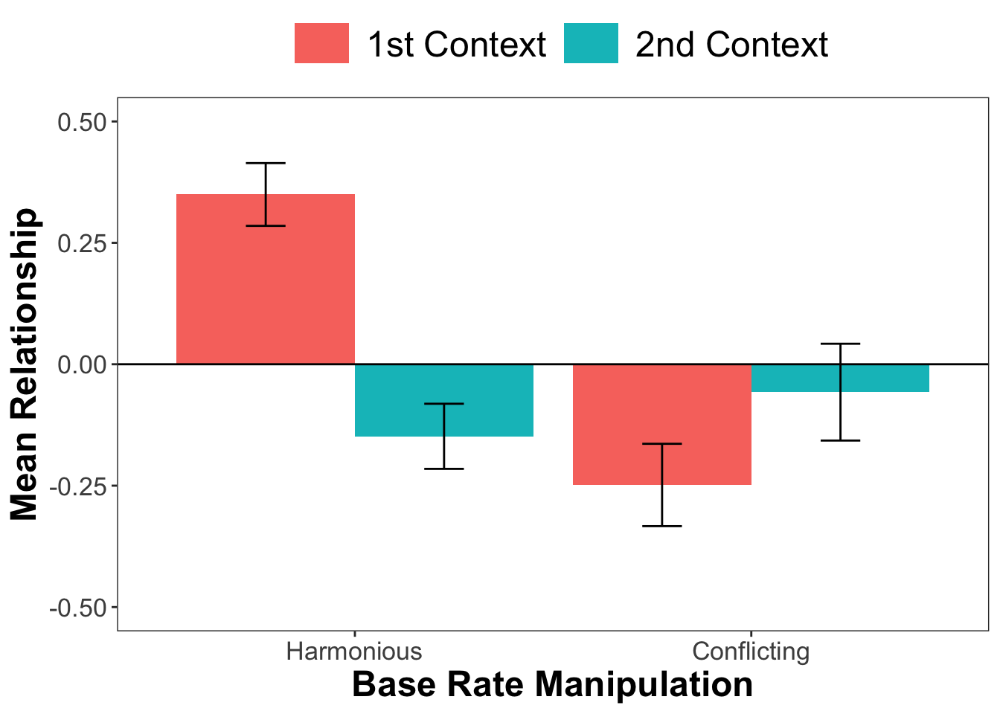
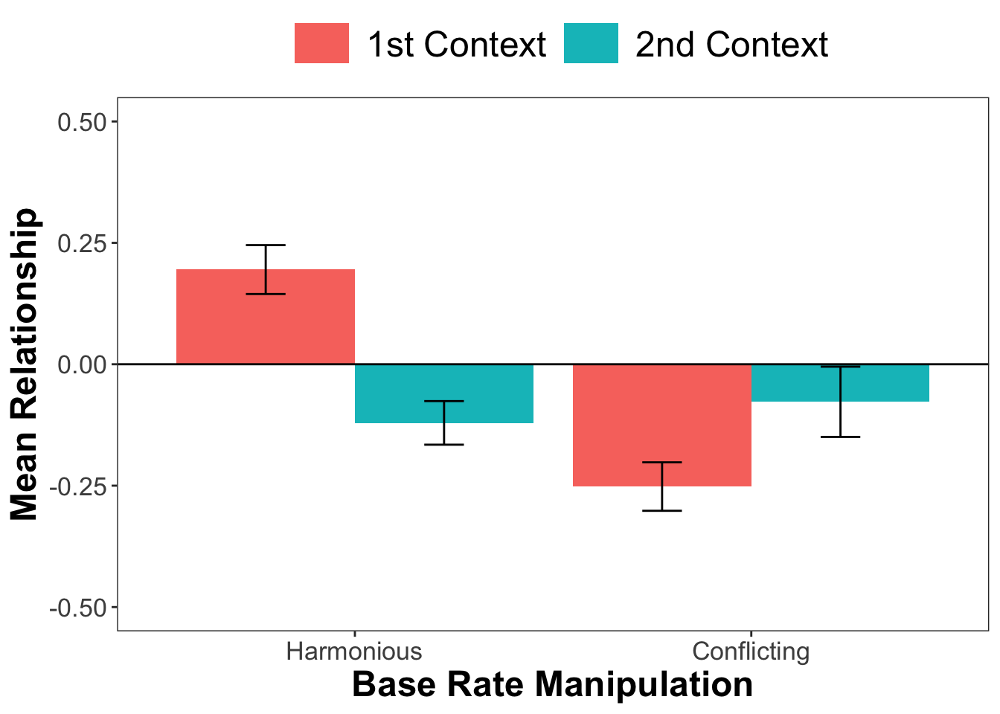
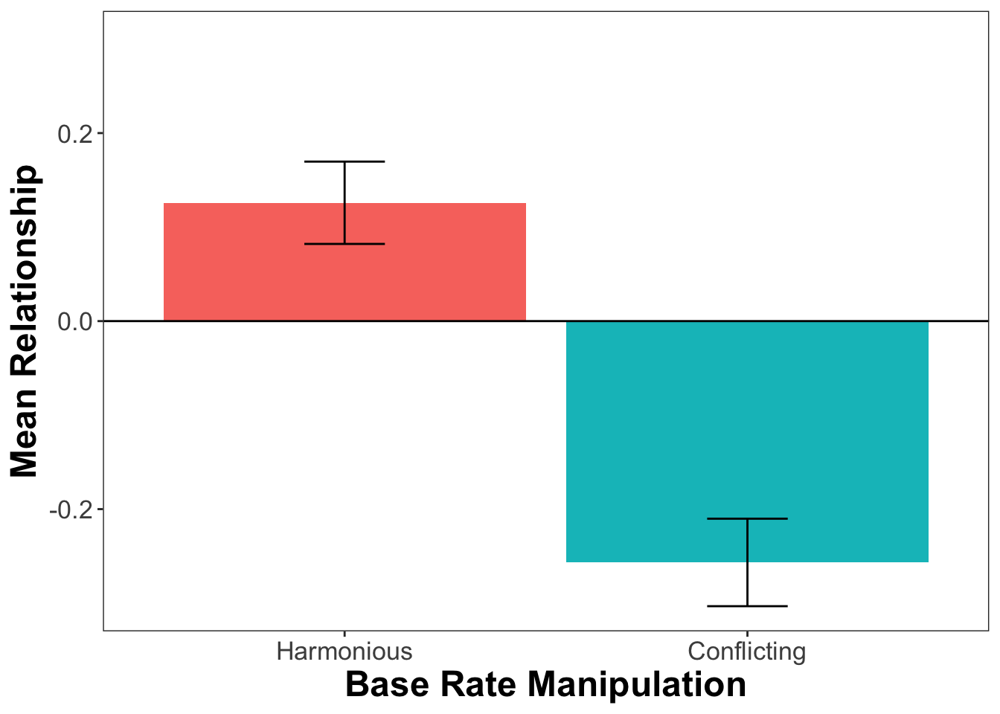
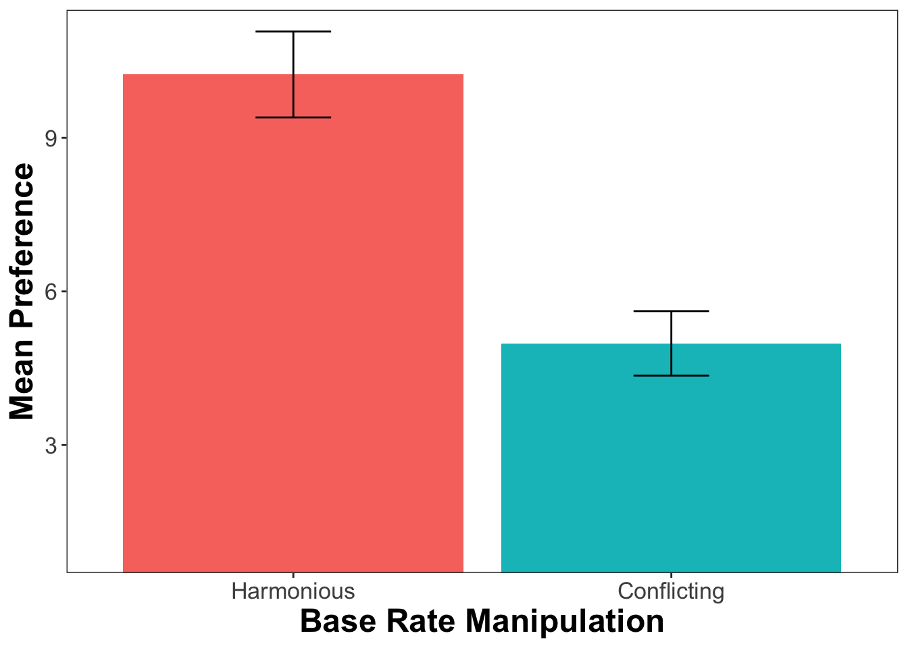

Background:
The study investigated whether frequency constellations of food health and taste in different contexts contribute to beliefs about the health-taste relationship. We hypothesised that if there is more tasty and unhealthy food in one than another context, people will perceive an unhealthy-tasty relationship, regardless of the actual contingency between health and taste. Conversely, if there is more tasty and healthy food in one than another context, people will perceive a healthy-tasty relationship.
Procedure:
Participants viewed graphs summarising health and taste ratings (i.e., base rates) from two different food contexts, specifically delivery apps. Afterwards, they indicated to what extent they perceived a relationship between health and taste, separately in each context, as well as overall, across contexts.
Design:
4 conditions in a mixed design. Each participant viewed information about food from two contexts (within factor context) Participants were randomly assigned to the harmonious or conflicting base rate manipulation (between factor condition). In the harmonious base rate manipulation group, there were both more healthy and tasty foods in the first than the second context. In the conflicting base rate manipulation group, there were more unhealthy and tasty foods in the first than the second context.
The contexts had different names which were counter-balanced between participants (variable random_app).
Dependent measures:
The dependent variable was participants’ perceived relationship between healthiness and tastiness, which we assessed in two ways:
Participants indicated for each context how likely they would get a tasty food when getting a healthy and an unhealthy food on two slider scales from 0% to 100% (Conditional probability estimate).
They also indicated, within each context as well as across contexts, whether the healthy or the unhealthy foods were tastier, on a slider scale from 1 = the unhealthy meals to 100 = the healthy meals (Relative contingency belief).
In addition, participants indicated what kind of food they would more likely order from any of the contexts, on a Likert scale ranging from 1 = an unhealthy food to 11 = a healthy food (Preference).
Manipulation checks and additional measures:
To ensure that participants recognized the different frequencies of healthy and tasty food across the different contexts, they estimated how many foods per context were (un)healthy and (not) tasty, respectively (Base rate estimates).
The manipulation check analyses are documented in a separate R markdown file: Study1_manipulation_checks.Rmd.
Additionally, we administered the protestant ethic scale (PES) to control for its possible influence in the analyses. For the control analyses, see the separate R markdown file Study1_control.Rmd.
We also asked participants how often they ordered food via delivery apps or websites, with answer options “Never”, “Rarely”, “Sometimes”, and “Often”. If they chose any answer other than “Never”, we asked them to rate the tastiness and healthiness of the food offered by the delivery apps they used in their daily life. Descriptive analyses of these variables can be found in the separate R markdown file Study1_control.Rmd.
Perceived health-taste relationship within contexts
DV 1: Conditional probability estimate:
First, we tested the effects of base rate manipulation, context and their interaction on participants’ conditional probability estimate. We calculated a mixed ANOVA, testing the effect of the between-subjects factor base rate manipulation (harmonious vs. conflicting), within-subjects factor context (1st vs. 2nd) and their interaction on the conditional probability estimate. We expected a significant main effect of base rate manipulation.
Descriptive statistics
| Base rate manipulation | Context | N | Mean contingency estimate | Std. Dev. | Std. Error | 95% CI |
|---|---|---|---|---|---|---|
| Harmonious | 1st Context | 80 | 0.35 | 0.29 | 0.03 | 0.06 |
| Harmonious | 2nd Context | 80 | -0.15 | 0.30 | 0.03 | 0.07 |
| Conflicting | 1st Context | 70 | -0.25 | 0.36 | 0.04 | 0.08 |
| Conflicting | 2nd Context | 70 | -0.06 | 0.42 | 0.05 | 0.10 |
ANOVA
Code
aov_condi <-
anova_test(
data = dat_long_ce, dv = condi_es, wid = id,
between = condition, within = context, type = 3, effect.size = 'pes')| df/nominator | df/denominator | \(F\) | \(p\) | Sig. | partial \(\eta^2\) | |
|---|---|---|---|---|---|---|
| Base rate manipulation | 1 | 148 | 42.47 | 0 | * | 0.22 |
| Context | 1 | 148 | 14.55 | 0 | * | 0.09 |
| Base rate manipulation*Context | 1 | 148 | 73.40 | 0 | * | 0.33 |
As expected, there was a large main effect of base rate manipulation. There was also a medium-sized effect of context as well as a large effect of the 2-way interaction between base rate manipulation and context. To follow up, we calculated pairwise comparisons between base rate manipulations within each context.
Pairwise comparisons
Code
condi_pw <-
dat_long_ce %>%
group_by(context) %>%
pairwise_t_test(condi_es ~ condition, p.adjust.method = "bonferroni")
kable(condi_pw[,-c(2:6)], format = 'markdown', digits = 2,
caption = 'Pairwise comparisons of the perceived health-taste relationship between contexts within each base rate manipulation',
col.names = c('Context', '$p$', 'Sign', '$p.adj$', 'Sign. adj.'))| Context | \(p\) | Sign | \(p.adj\) | Sign. adj. |
|---|---|---|---|---|
| 1st Context | 0.00 | **** | 0.00 | **** |
| 2nd Context | 0.12 | ns | 0.12 | ns |
In the first context with many tasty foods, participants perceived a healthy-tasty relationship, when healthy food was also frequent and an unhealthy-tasty relationship when unhealthy food was frequent. In the second context with few tasty foods, participants’ perceived health-taste relationship was slightly negative in both base rate manipulations.
Plotting the Results:

DV 2: Relative contingency belief
Next, we tested the effects of base rate manipulation, context and their interaction on participants’ relative contingency belief, with the same mixed ANOVA as before.
Descriptive statistics
| Base rate manipulation | Context | N | Mean contingency belief | Std. Dev. | Std. Error | 95% CI |
|---|---|---|---|---|---|---|
| Harmonious | 1st Context | 80 | 0.20 | 0.23 | 0.03 | 0.05 |
| Harmonious | 2nd Context | 80 | -0.12 | 0.20 | 0.02 | 0.04 |
| Conflicting | 1st Context | 70 | -0.25 | 0.21 | 0.03 | 0.05 |
| Conflicting | 2nd Context | 70 | -0.08 | 0.30 | 0.04 | 0.07 |
ANOVA
Code
aov_belief <-
anova_test(
data = dat_long_belief, dv = belief_ht, wid = id,
between = condition, within = context, type = 3, effect.size = 'pes')| df/nominator | df/denominator | \(F\) | \(p\) | Sig. | partial \(\eta^2\) | |
|---|---|---|---|---|---|---|
| Base rate manipulation | 1 | 148 | 61.68 | 0.00 | * | 0.29 |
| Context | 1 | 148 | 5.89 | 0.02 | * | 0.04 |
| Base rate manipulation*Context | 1 | 148 | 71.11 | 0.00 | * | 0.32 |
Pairwise comparisons
| Context | \(p\) | Sign | \(p.adj\) | Sign. adj. |
|---|---|---|---|---|
| 1st Context | 0.0 | **** | 0.0 | **** |
| 2nd Context | 0.3 | ns | 0.3 | ns |
In the first context with many tasty foods, participants perceived a healthy-tasty relationship, when healthy food was also frequent and an unhealthy-tasty relationship when unhealthy food was frequent. In the second context with few tasty foods, participants’ perceived health-taste relationship was slightly negative in both base rate manipulations.
Plotting the Results
Code
belief_sum %>%
ggplot(aes(x=condition, y=belief_ht, fill=context)) +
geom_bar(position=position_dodge(), stat="identity") +
geom_errorbar(aes(ymin=belief_ht-ci, ymax=belief_ht+ci),
width=.2,
position=position_dodge(.9)) +
geom_hline(yintercept = 0) +
coord_cartesian(ylim = c(-.5, .5))+
theme_apa() +
labs(x = 'Base Rate Manipulation', y = 'Mean Relationship')+
theme(legend.position = 'top',
axis.title.y = element_text(face = 'bold', size = 18),
axis.title.x = element_text(face = 'bold', size = 18),
legend.text = element_text(size = 18),
text = element_text(size = 16))
Perceived health-taste relationship across contexts
Next, we tested the effects of base rate manipulation on participants’ perceived health-taste relationship (Relative contingency belief) across contexts, with a one-way ANOVA.
Descriptive statistics
| Context | N | Mean contingency belief | Std. Dev. | Std. Error | 95% CI |
|---|---|---|---|---|---|
| Harmonious | 80 | 0.13 | 0.2 | 0.02 | 0.04 |
| Conflicting | 70 | -0.26 | 0.2 | 0.02 | 0.05 |
| df/nominator | df/denominator | \(F\) | \(p\) | Sig. | partial \(\eta^2\) | |
|---|---|---|---|---|---|---|
| Base rate manipulation | 1 | 148 | 142.2 | 0 | * | 0.49 |
Plotting the Results

Preference for Healthy Food:
Finally, we tested the effects of base rate manipulation on participants’ preference for healthy vs. unhealthy food, with a one-way ANOVA.
Descriptive statistics
| Context | N | Mean preference | Std. Dev. | Std. Error | 95% CI |
|---|---|---|---|---|---|
| Harmonious | 80 | 10.24 | 3.77 | 0.42 | 0.84 |
| Conflicting | 70 | 4.99 | 2.64 | 0.32 | 0.63 |
| df/nominator | df/denominator | \(F\) | \(p\) | Sig. | partial \(\eta^2\) | |
|---|---|---|---|---|---|---|
| Base rate manipulation | 1 | 148 | 95.04 | 0 | * | 0.39 |
Plotting the Results:
Code
preference_sum %>%
ggplot(aes(x=condition, y=preference, fill=condition)) +
geom_bar(position=position_dodge(), stat="identity") +
geom_errorbar(aes(ymin=preference-ci, ymax=preference+ci),
width=.2,
position=position_dodge(.9)) +
coord_cartesian(ylim = c(1, 11))+
theme_apa() +
labs(x = 'Base Rate Manipulation', y = 'Mean Preference')+
theme(legend.position = 'none',axis.title.y = element_text(face = 'bold', size = 18),
axis.title.x = element_text(face = 'bold', size = 18),
legend.text = element_text(size = 18),
text = element_text(size = 16))
Summary of Results:
Across both contexts, and within the context with many tasty foods, participants viewing harmonious base rates believed more strongly that healthy food tastes better than unhealthy food than participants viewing conflicting base rates.
Participants viewing harmonious base rates would more likely order a healthy meal from any context than participants viewing conflicting base rates.
Participants’ perceived health-taste relationship did not differ between base rate manipulations in the context with few tasty foods.